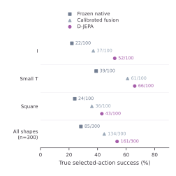

Decision alignment
Learn bounded, set-wise corrections from future–goal descriptors and ordinal structure. Restricted predictor adaptation offers a complementary source of decision evidence.
Explore the modules ↗NEBULIS Lab · Embodied intelligence
Learning which predicted futures matter for action selection.
D-JEPA builds on pretrained predictive models to learn decision-relevant relations, combine evidence across predictive geometries, and express the learned structure in future representations.
Predictive geometry and decision quality are not the same thing. The distance that makes a future look promising need not rank the candidate actions by their physical outcomes.
Learn the decision-relevant relations between candidate futures, then use those relations to align action selection.
The decision boundary is a learning target—not just a property inherited from pretraining.
Predictive geometry → candidate ordering → physical outcome
Author-drawn illustration forthcomingPredictive models · Relational alignment · Future representation
Reserved for the final hand-drawn overviewLearn bounded, set-wise corrections from future–goal descriptors and ordinal structure. Restricted predictor adaptation offers a complementary source of decision evidence.
Explore the modules ↗Combine relational evidence from complementary predictors in one alignment framework, extending beyond a single predictive distance.
Read the protocols ↗Encode a learned decision ordering in JEPA-compatible goal-distance geometry, and learn bounded, same-action updates across future time steps.
Explore checkpoints ↗PushT exact realization preserves earlier futures and encodes terminal ordering while retaining its embedded predictive and relational computation. Reacher learns same-action five-step future updates; its reported physical decisions use the relational selector. These experiments establish complementary mechanisms and do not imply a newly evaluated combined checkpoint or single-backbone distillation.
Reported populations remain separate; no pooled cross-task success rate.
Calibrated composition
LeWM: 214/256
Relational selector + transport
LeWM: 111/128
Task-local ordinal alignment
Calibrated fusion: 134/300
| Task / population | Matched reference | D-JEPA | Configuration / metric |
|---|---|---|---|
| PushT · independent 256 | LeWM 214/256 | 225/256 | Calibrated composition |
| PushT · same 256 | LeWM 214/256 | 223/256 | Relational / exact realization |
| Reacher · independent 128 | LeWM 111/128 | 120/128 | Joint-configuration success |
| Granular · formal 64 | DINO-WM 23/64 | 25/64 | Standard success threshold |
| Granular · same 64 | DINO-WM 5/64 | 12/64 | Strict success threshold |
| PushObj · unseen 300 | Calibrated fusion 134/300 | 161/300 | 100 starts per unseen shape |
Granular success and average distance are distinct metrics: mean Chamfer is 0.35835 for D-JEPA and 0.34089 for DINO-WM (lower is better). Full task metrics and the seven-condition visual-shift results are in the supervision archive's recorded authorities.



Click any figure for the original vector image. All plots retain their approved colors, values and white background.
Curated baseline-failure / D-JEPA-success examples. These illustrate gains; aggregate results include gains, losses and ties.
All 25 control actions of the fixed-horizon protocol, with initial context and terminal hold. This is not a receding-horizon full-task episode.
View the high-resolution timeline ↗Full fixed 25-control-step sequence. Success is measured against the target joint configuration.
View the high-resolution timeline ↗All five actions and settling steps. High-resolution replay costs retain their own measured values; they do not replace formal aggregate measurements.
View the high-resolution timeline ↗A lightweight package, task-specific checkpoints, and a single decision-supervision archive.
Start with the independent PushT cached-decision replay. The relational profile reproduces 223/256 successful choices.
Full reproduction guide ↗pip install -e '.[download]'
python scripts/download_artifacts.py --profile pusht-relational --dataset
python -m zipfile -e data/D-JEPA-supervision-v1.zip data
bash scripts/reproduce.shThis release includes completed experiments only. Real-robot work and the second expansion are being integrated separately; no unfinished numerical results are presented here.
{kind=link}
{kind=link}
{kind=link}
{kind=link}